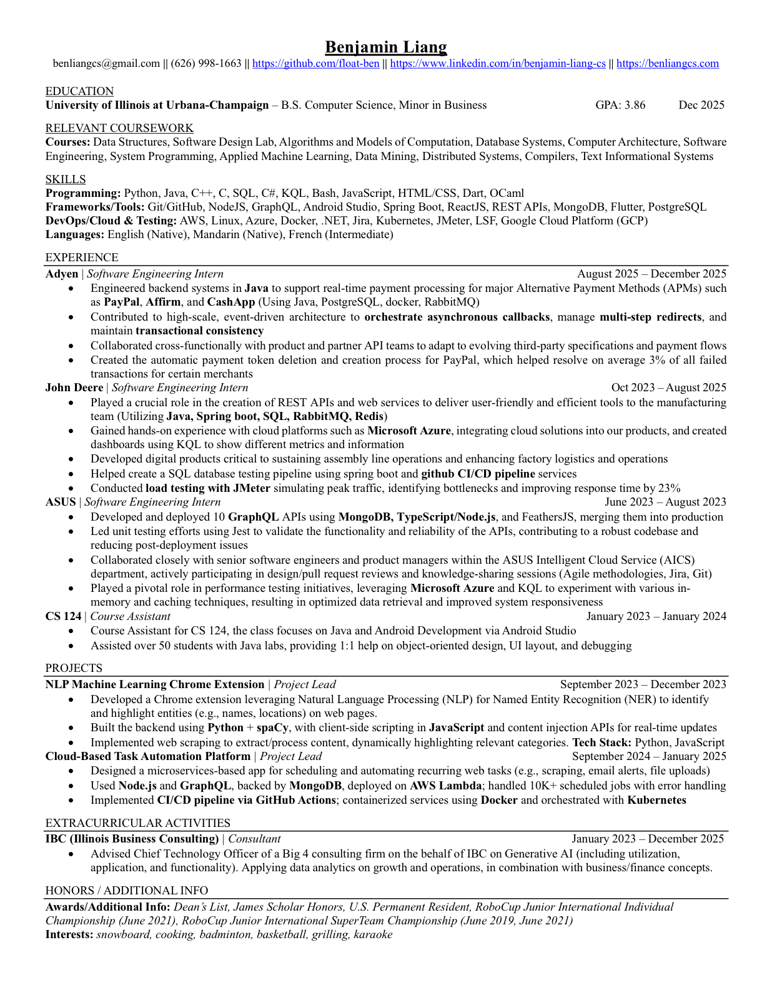

Experience across payments, operations, and production systems.
Software Engineering Intern · Adyen
- Engineered Java backend systems for real-time payment processing across PayPal, Affirm, and CashApp alternative payment flows.
- Worked with Java, PostgreSQL, Docker, and RabbitMQ across high-scale payment infrastructure.
- Contributed to event-driven architecture for asynchronous callbacks, multi-step redirects, and transactional consistency.
- Collaborated with product and partner API teams to adapt to evolving third-party payment specifications and flows.
- Created PayPal token deletion and creation automation, helping resolve an average of 3% of failed transactions for certain merchants.
Software Engineering Intern · John Deere
- Created REST APIs and web services for user-friendly internal tools used by manufacturing teams.
- Built with Java, Spring Boot, SQL, RabbitMQ, and Redis across backend services and production workflows.
- Integrated Microsoft Azure cloud solutions and created KQL dashboards for product metrics and operational visibility.
- Developed digital products supporting assembly line operations, factory logistics, and operations workflows.
- Helped create a SQL database testing pipeline using Spring Boot and GitHub CI/CD services.
- Ran JMeter load tests for peak traffic, identified bottlenecks, and improved response time by 23%.
Software Engineering Intern · ASUS
- Developed and deployed 10 GraphQL APIs using MongoDB, TypeScript, Node.js, and FeathersJS, then merged them into production.
- Led Jest unit testing to validate API functionality and reliability, reducing post-deployment issues.
- Collaborated with senior engineers and product managers in the ASUS Intelligent Cloud Service department.
- Participated in Agile workflows, Jira planning, Git collaboration, design reviews, pull request reviews, and knowledge-sharing sessions.
- Used Microsoft Azure and KQL to test in-memory and caching techniques for optimized data retrieval and responsiveness.
Course Assistant · CS 124
Helped 50+ students with Java, object-oriented design, Android Studio, and debugging.
Selected builds with practical constraints and technical depth.
Named Entity Recognition Highlighter
Chrome extension that highlights names, locations, and other entities on web pages.
Recurring Task Platform
Scheduler for scraping, alerts, and file uploads, backed by GraphQL, MongoDB, and AWS Lambda.
Taiwan Utility Line Bot
Chat bot for quick shopping lookups and metro route help, using Python web crawling, structured replies, and Heroku deployment.
Academic Foundation
University of Illinois Urbana-Champaign
B.S. Computer Science · Business minor
Systems, data, and software engineering
Data structures, algorithms, database systems, computer architecture, distributed systems, compilers, applied machine learning, data mining, text information systems, and systems programming.
Honors and eligibility
Dean's List, James Scholar Honors, and Permanent Resident / Green Card holder status.
Backend foundations, cloud infrastructure, and product surfaces.
Languages
Python, Java, C++, C, SQL, C#, KQL, Bash, JavaScript, Dart, OCaml
Frameworks
Spring Boot, React, Node.js, GraphQL, REST APIs, MongoDB, PostgreSQL, Flutter
Cloud & Testing
AWS, Azure, GCP, Docker, Kubernetes, Linux, JMeter, Jest, GitHub Actions
Clubs where I build, lead, and explore.
Consultant
Advised a Big 4 consulting firm CTO on generative AI use cases, combining data analytics with growth, operations, business, and finance context.
Engineering outreach club
Supported student-run technical projects and campus events for the UIUC engineering community.
Computer science club
Explored game development, mobile apps, and cybersecurity through student-led SIGs.

Open full PDFCS depth, business context, and team-based building.
Open the full PDF for the detailed resume version of my work across Adyen, John Deere, ASUS, CS 124 course support, selected projects, and campus leadership.
It also includes additional honors, technical coursework, and the original resume formatting for quick recruiting review.